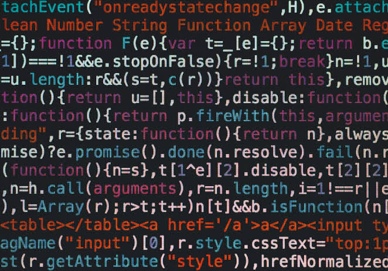

O exército americano precisava recalcular urgentemente tabelas de trajetórias balísticas (o caminho que uma bala de canhão ou míssil faz no ar).
Fazer isso à mão demorava dias. O ENIAC prometia fazer em segundos, mas havia um enorme problema: a máquina não sabia como processar essas informações sozinha, e não existia nenhuma linguagem de programação para dar ordens a ela.
Para fazer o ENIAC
rodar um único cálculo, o trabalho dessas mulheres não era digitar comandos em uma tela, mas sim uma verdadeira maratona física e mental:A Lógica no Papel: Primeiro, elas passavam dias estudando as equações diferenciais da trajetória. Elas precisavam quebrar a matemática complexa em minúsculos passos que a máquina pudesse somar ou subtrair.A Maratona dos Cabos: Com o plano no papel, elas entravam na sala do ENIAC.
As paredes eram fileiras de painéis pretos cheios de tomadas, parecidas com as antigas mesas de telefonistas. Para dizer à máquina onde salvar um número ou quando somar, elas precisavam conectar fisicamente cabos pesados de um painel para o outro.Os Interruptores: Além dos cabos, o ENIAC tinha cerca de 6.000 chaves e interruptores manuais. Cada um precisava ser virado para a posição exata.
Se uma única chave estivesse errada, ou se um cabo ficasse frouxo entre as 18.000 válvulas de vidro que esquentavam a sala, o cálculo falhava.Depois de dias puxando cabos e virando chaves sob um calor escaldante, elas ligavam a máquina.
O ENIAC piscava suas luzes e entregava o resultado em segundos. O cálculo era veloz, mas a preparação levava semanas. Elas eram, literalmente, o "software" da máquina.
O Nascimento do Cartão Perfurado e do BinárioPoucos anos depois, as coisas mudaram ligeiramente com a chegada dos cartões perfurados (pedaços de cartolina com furos que representavam os dados). Mas a vida dos programadores continuava um caos.Imagine agora um jovem engenheiro no início dos anos 1950. Os cabos sumiram, mas agora ele precisa traduzir sua lógica para código binário puro. Para fazer o computador somar dois números, ele passava horas perfurando manualmente cartões com sequências como 10110000 00000001.Se ele derrubasse a pilha de cartões no chão e eles saíssem de ordem, dias de trabalho eram perdidos. Se ele esquecesse de fazer um único furo no lugar certo, a máquina simplesmente travava ou cuspia um resultado completamente absurdo. Não existia mensagem de erro dizendo "você errou na linha 10"; o programador precisava pegar uma lupa e revisar furo por furo, cartão por cartão.A Conexão com a Revolução das LinguagensFoi exatamente ao viver essa rotina exaustiva de conectar cabos e perfurar cartões que mentes como Grace Hopper e John Backus disseram: "Chega. O computador é uma máquina de calcular; por que ela mesma não faz esse trabalho sujo de tradução?"Aquela dificuldade física e os dedos calejados das primeiras programadoras foram o combustível que forçou a criação do compilador e, consequentemente, do FORTRAN e do COBOL. As linguagens de programação nasceram não apenas como uma ferramenta técnica, mas como um grito de libertação de humanos que queriam parar de agir como circuitos elétricos e passar a focar apenas na lógica do pensamento.

1. A Linguagem Assembly (Anos 1940)Para não ter que digitar binário, os programadores criaram os mnemônicos (códigos de texto simples que representavam comandos diretos do processador).Como funcionava: Em vez de digitar 10110000 01100001, o programador escrevia MOV AL, 61h (um comando para mover dados). Um programa chamado "Montador" (Assembler) traduzia isso para binário.O problema: Ainda era uma linguagem de baixo nível. O programador precisava conhecer cada detalhe físico dos chips do computador.
2. A Invenção do Compilador (1951)A cientista e contra-almirante da Marinha Americana, Grace Hopper, revolucionou a computação ao criar o primeiro compilador (o sistema A-0).O impacto: O compilador era um programa que conseguia pegar palavras e fórmulas matemáticas escritas por humanos e traduzi-las automaticamente para a linguagem de máquina (binário). Isso abriu as portas para as linguagens de "alto nível".
3. As Primeiras Linguagens de Alto Nível (1957-1959)Com a tecnologia do compilador, surgiram as linguagens focadas em propósitos humanos e não na máquina:Para engenheiros: John Backus liderou a criação do FORTRAN (1957) na IBM.
Ele permitia que cientistas digitassem fórmulas matemáticas diretamente (como X = A + B) sem entender nada de circuitos eletrônicos.
Para negócios: Grace Hopper liderou o desenvolvimento do COBOL (1959), focado no comércio. O código usava frases em inglês como ADD OVERTIME TO STANDARD-HOURS, permitindo que gerentes de bancos e empresas entendessem o que o programa fazia.
Com a invenção do compilador por Grace Hopper, o programador finalmente pôde escrever como um ser humano. O compilador lia o texto em inglês e traduzia aqueles cabos e binários sozinho.